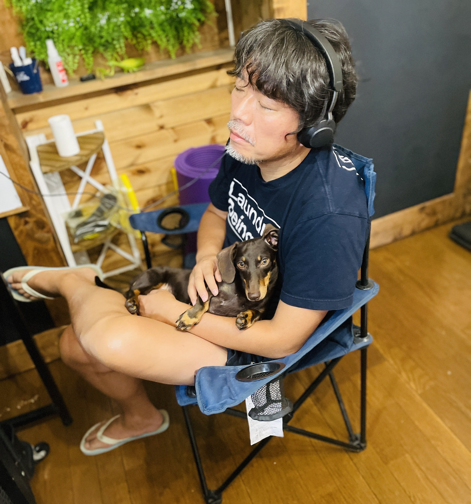

阿部秀朗（あべひでお）
宮城県仙台市出身、30年以上のハードウェアエンジニアとして活躍。
レザークラフト、DIY、ICT、陶芸、料理など多彩なスキルを習得。
経歴
- 1968年 宮城県仙台市生まれ
- 1984年 北仙台中学校卒業・仙台高校入学
- 1987年 仙台高校卒業・東北工業大学入学
- 1991年 東北工業大学卒業・富士通デジタルテクノロジー株式会社入社
- 2005年 富士通株式会社異動
- 2025年 富士通株式会社在籍中
プライベート
栃木県小山市在住。既婚（妻、長男、ミニチュアダックス）
妻はスターバックスのブラックエプロンバリスタ（⭐️は12個！）として活躍。
コーヒーに関する知識は豊富ですし、スタバコレクションには珍しいグッズもいっぱいです。
保有資格
- DIY工作アドバイザー
- 日曜大工士
- ハンドメイドマイスター
- 食品衛生管理者